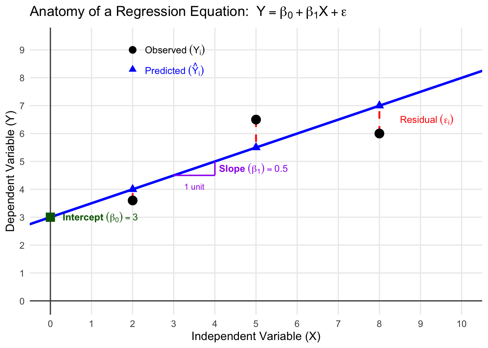
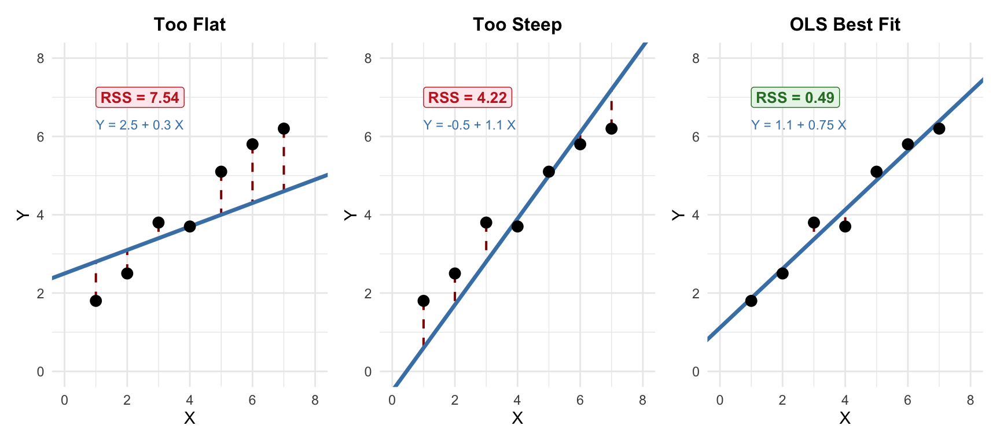
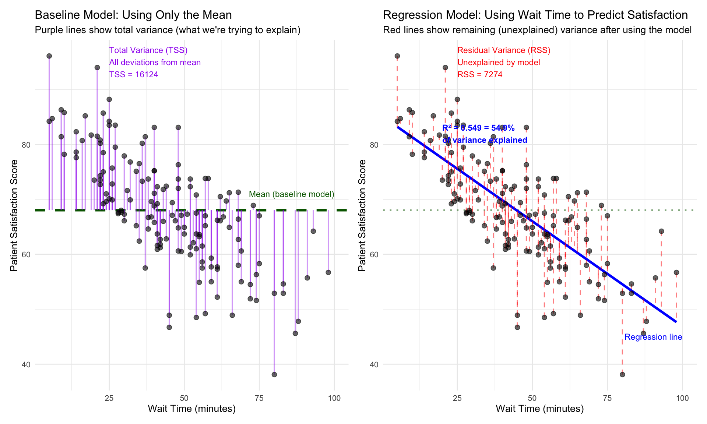

Linear Regression 1: Simple and Multiple Linear Regression
MBA642: Business Analytics in Healthcare Management
Introduction
From Correlation to Regression
In Week 8, we used correlation to answer whether there is a relationship between nurse staffing hours and patient satisfaction (e.g., r = 0.85).
Linear regression extends this by answering more detailed questions:
- How many points does satisfaction increase for each additional nursing hour? (quantifying the relationship)
- If we increase staffing to 8 hours per patient day, what satisfaction score can we expect? (making predictions)
- Among wait time, staffing, and facility age, which factors significantly explain patient satisfaction? (identifying key drivers)
- Does staffing still matter after controlling for facility age and patient severity? (controlling for confounding variables)
Why Linear Regression Matters
Healthcare managers frequently encounter situations where understanding relationships between variables is crucial for decision-making:
- Resource allocation: How does nurse staffing level affect patient outcomes?
- Cost management: What factors drive hospital readmission costs?
- Quality improvement: How does patient wait time impact satisfaction scores?
- Performance prediction: Can we predict length of stay based on patient characteristics?
Linear regression provides a powerful framework to:
- Quantify relationships between variables (e.g., “For every additional nurse per patient, satisfaction increases by X points”)
- Test hypotheses about whether relationships are statistically significant
- Make predictions about future outcomes
- Identify key drivers (among multiple factors, determine which significantly explain the outcome)
- Control for confounding variables when examining effects of interest
Overview of Linear Regression Types
| Type | Predictors | Example |
|---|---|---|
| Simple Linear Regression | 1 | Patient age → Length of stay |
| Multiple Linear Regression | 2+ | Patient age + Severity + Insurance → Length of stay |
Simple Linear Regression
What is it?
Simple linear regression models the relationship between one independent variable (X) and one dependent variable (Y) using a linear model (straight line). It is the foundation for understanding more complex regression models, and allows us to quantify how changes in one variable are associated with changes in another.
When to Use It
You can use simple linear regression when you want to:
- Examine the (linear) relationship between two continuous variables
- Predict an outcome based on a single predictor
- Quantify the strength and direction of a linear relationship
- Test whether a relationship is statistically significant
The Concept
Simple linear regression finds the “best-fitting” line (linear model) through the data points using a method called Ordinary Least Squares (OLS).
The Model Equation
The simple linear regression model is expressed as:
\[Y_i = \beta_0 + \beta_1 X_i + \epsilon_i\]
Where:
- \(Y_i\) (Dependent Variable; DV): The outcome we want to predict or explain. (e.g., patient satisfaction score)
- \(X_i\) (Independent Variable; IV): The predictor we use to explain the outcome. (e.g., wait time in minutes)
- \(\beta_0\) (Intercept): The predicted value of Y when X = 0. (Think of it as the starting point of the regression line)
- \(\beta_1\) (Regression Coefficient; Slope): The change in Y for a one-unit increase in X. (i.e., For each one-unit increase in X, how much does Y change)
- \(\epsilon_i\) (Residual): The difference between an observed value and the model’s prediction (i.e., the “leftover” the model does not explain)
The following diagram shows how all components of the regression equation relate to each other using a simple example with three data points:
The Ordinary Least Squares (OLS) Method
How OLS Works
The shape of a linear model (with one predictor) is determined by two components: the intercept and the slope.
The question we have now is: how do we define the “best” linear model given data? If we find a linear model that has the smallest squared differences between our predictions and the actual outcome values, we can say that the model is the best linear model.
Linear regression finds this “best” line by minimizing the residual sum of squares (RSS), also called the sum of squared residuals:
\[RSS = \sum_{i=1}^{n} (Y_i - \hat{Y}_i)^2 = \sum_{i=1}^{n} \epsilon_i^2\]
Where \(Y_i\) is the observed value and \(\hat{Y}_i\) is the predicted value for observation \(i\).
Why squared residuals?
- Squaring ensures positive and negative errors don’t cancel out
- Squaring penalizes larger errors more heavily
- Leads to closed-form mathematical solutions
The figure below shows three different lines fitted to the same data. Each line has a different intercept and slope, producing different residuals (red dashed lines) and therefore different RSS values.
Notice that the OLS line (right panel) has the smallest RSS. No other intercept-slope pair can produce a smaller sum of squared residuals.

Using the Fitted Model for Predictions
Once OLS finds the best-fitting line by estimating \(\beta_0\) (intercept) and \(\beta_1\) (slope), we can use the fitted model to make predictions for new observations.
The prediction equation is:
\[\hat{Y} = \hat{\beta}_0 + \hat{\beta}_1 X\]
Where:
- \(\hat{Y}\) = Predicted value of the dependent variable
- \(\hat{\beta}_0\) = Estimated intercept from the fitted model
- \(\hat{\beta}_1\) = Estimated slope from the fitted model
- \(X\) = Value of the independent variable for which we want to make a prediction
The “hat” notation (^) indicates these are estimated values from our sample data, not the true population parameters. We use the estimated coefficients to predict outcomes for:
- Observations within our dataset to assess model fit
- New observations to forecast outcomes based on predictor values
- Hypothetical scenarios to evaluate “what if” questions (e.g., “What if we reduce wait time to 30 minutes?”)
Let’s see this in action with a real healthcare example.
Example Case: Patient Satisfaction and Wait Time
Background and Context
Research has consistently shown that emergency department wait times are negatively associated with patient satisfaction. A 2021 study (Abass et al.) found that being informed about waiting time showed a moderately strong positive correlation with patients’ overall rating, highlighting the importance of wait time management for patient experience.
Let’s examine whether emergency department wait time affects patient satisfaction scores using synthetic data that mirrors these real-world relationships.
Loading the Dataset
Run the code below to load the dataset and ruquired packages:
# Load required packages
library(tidyverse)
library(car)
library(GGally)
set.seed(2026)
# Load synthetic ED data
ed_data <- read.csv("https://raw.githubusercontent.com/mba642-spring-26/mba642-spring-26.github.io/refs/heads/main/datasets/week11_ed_data.csv")
# Preview the data
head(ed_data, 10) X patient_id wait_time_minutes satisfaction_score
1 1 1 55 63.2
2 2 2 23 78.5
3 3 3 48 73.7
4 4 4 43 71.8
5 5 5 32 76.8
6 6 6 5 96.1
7 7 7 30 67.3
8 8 8 25 70.1
9 9 9 47 66.1
10 10 10 36 73.3Exploratory Data Analysis
Before running regression, always visualize your data. Let’s take a look at the pattern using a scatterplot.

Fitting the Simple Linear Regression Model
Let’s fit the simple linear regression model to quantify the relationship. We can fit a linear model using the lm() function in R.
# Fit the model
model_simple <- lm(satisfaction_score ~ wait_time_minutes, data = ed_data)
# Display model summary
summary(model_simple)
Call:
lm(formula = satisfaction_score ~ wait_time_minutes, data = ed_data)
Residuals:
Min 1Q Median 3Q Max
-21.2114 -5.0646 -0.5653 4.5972 16.9139
Coefficients:
Estimate Std. Error t value Pr(>|t|)
(Intercept) 85.11385 1.39594 60.97 <2e-16 ***
wait_time_minutes -0.38228 0.02849 -13.42 <2e-16 ***
---
Signif. codes: 0 '***' 0.001 '**' 0.01 '*' 0.05 '.' 0.1 ' ' 1
Residual standard error: 7.01 on 148 degrees of freedom
Multiple R-squared: 0.5489, Adjusted R-squared: 0.5458
F-statistic: 180.1 on 1 and 148 DF, p-value: < 2.2e-16The Fitted Regression Equation
Based on the model output above, we can write our fitted regression equation with the estimated coefficients:
\[\widehat{\text{Satisfaction}} = 85.11 + (-0.382) \times \text{Wait Time}\]
Or more generally:
\[\hat{Y}_i = 85.11 + (-0.382) \times X_i\]
Where:
- \(\hat{Y}_i\) = Predicted patient satisfaction score for patient \(i\)
- \(X_i\) = Wait time in minutes for patient \(i\)
- 85.11 = Estimated intercept (\(\hat{\beta}_0\))
- -0.382 = Estimated slope (\(\hat{\beta}_1\))
Interpreting the Results
Let’s break down the output systematically:
1. The Intercept
Value: β₀ = 85.11
Interpretation: When wait time is 0 minutes, the predicted patient satisfaction score is 85.11 points. This represents the baseline satisfaction when there is no wait.
Note: Intercepts should be interpreted cautiously. If zero falls outside the range of observed X values (e.g., if no patient had a 0-minute wait), the intercept is an extrapolation and may not represent a realistic scenario. Here, a 0-minute wait is plausible, so the interpretation is reasonable.
2. The Slope (Regression Coefficient)
Value: β₁ = -0.382
Interpretation:
Direction: The coefficient is negative (-0.382), indicating that longer wait times are associated with lower satisfaction scores.
Magnitude: For every one-minute increase in wait time, patient satisfaction decreases by 0.382 points (on the 0-100 scale).
Statistical Significance: In regression, the null and alternative hypotheses for each coefficient are:
- \(H_0\): \(\beta_1 = 0\) (no linear relationship between X and Y)
- \(H_1\): \(\beta_1 \neq 0\) (a linear relationship between X and Y)
The p-value is < 2.2e-16, which is less than 0.05. We reject the null hypothesis (there is a linear relationship between X and Y).
3. Model Fit (R-squared)
R² = 0.549
R² indicates the amount of the variance in the outcome variable explained by the model. In this case, wait time explains 54.9% of the variance in patient satisfaction scores. The remaining 45.1% is attributable to other factors not included in this model (e.g., staff friendliness, treatment effectiveness, facility cleanliness).
To understand R² visually, let’s see how the regression model explains more variance compared to simply using the mean:

Left plot: Without any predictors, we’d predict every patient’s satisfaction as the mean (dark green line). The purple lines show how far each observation deviates from this mean. This is the total variance (TSS) we want to explain.
Right plot: With wait time as a predictor, the regression line (blue) does a better job. The red dashed lines show the remaining errors (residuals). This is the residual variance (RSS) left unexplained.
R² = 1 - (RSS/TSS) = The proportion of total variance that our model explains. An R² of 0.549 means the regression model explains 54.9% of the variance in patient satisfaction compared to just using the mean.
Making Predictions
One powerful application of regression is predicting outcomes for new observations. Let’s assume that we have new patients and their waiting times.
# Predict satisfaction for specific wait times
# New data need to be data frame or a list
new_patients <- data.frame(
wait_time_minutes = c(15, 30, 45, 60, 90)
)
head(new_patients) wait_time_minutes
1 15
2 30
3 45
4 60
5 90By using the predict() function we can get predicted satisfaction scores for these new patients based on their wait times.
# Get predicted satisfaction scores
new_patients$predicted_score <- predict(model_simple, newdata = new_patients)
new_patients wait_time_minutes predicted_score
1 15 79.37971
2 30 73.64557
3 45 67.91144
4 60 62.17730
5 90 50.70902Manual Calculation Example
Let’s manually calculate one prediction to understand what the predict() function is doing. We’ll predict satisfaction for a patient with a 45-minute wait time.
Step 1: Recall the fitted equation
\[\widehat{\text{Satisfaction}} = 85.11 + (-0.382) \times \text{Wait Time}\]
Step 2: Substitute and calculate
For Wait Time = 45 minutes:
\[\widehat{\text{Satisfaction}} = 85.11 + (-0.382) \times 45 = 67.91\]
The predicted satisfaction score for a patient with a 45-minute wait is 67.91 points. You can verify this matches the value in the prediction table above!
Practical Application
If your ED currently has an average wait time of 60 minutes and you implement process improvements to reduce it to 30 minutes, the model predicts satisfaction would increase by approximately 11.46 points. Since each additional minute of wait time decreases satisfaction by 0.382 points, a 30-minute reduction corresponds to a meaningful improvement in patient experience.
Practice 1: Simple Linear Regression
NoteYour Turn!
Practice fitting and interpreting simple linear regression models on your own using a different healthcare scenario.
Scenario
You are analyzing the relationship between nurse staffing levels and patient mortality rates across 100 hospitals. Hospital administrators want to know whether having more nurses per patient reduces mortality rates.
This question has important implications for staffing policies and patient safety. If the data show that higher nurse-to-patient ratios are associated with lower mortality, hospital administrators could use the regression results to justify hiring additional nursing staff, estimate how much mortality might decrease with a specific staffing increase, and make evidence-based budget decisions that balance costs against patient outcomes.
Data Loading
Run this code to load the dataset:
# Loading dataset
simple_practice_data <- read.csv("https://raw.githubusercontent.com/mba642-spring-26/mba642-spring-26.github.io/refs/heads/main/datasets/week11_practice_data1.csv")
# Preview data
head(simple_practice_data, 5) X hospital_id nurses_per_patient mortality_rate
1 1 1 1.99 10.10
2 2 2 2.46 6.51
3 3 3 1.95 11.13
4 4 4 2.69 6.06
5 5 5 1.33 7.15Dataset Variables:
| Variable | Description | Type |
|---|---|---|
hospital_id |
Unique hospital identifier | Numeric |
nurses_per_patient |
Ratio of nurses to patients (higher = better staffing) | Numeric (continuous) |
mortality_rate |
Hospital mortality rate (deaths per 100 patients) | Numeric (continuous) |
Task 1.1: Visualize the Relationship
Before fitting a model, create a scatterplot to visualize the relationship between nurse staffing and mortality rates.
# Fill in the blanks
ggplot(data = ___, aes(x = ___, y = ___)) +
geom_point(alpha = 0.6, color = "steelblue", size = 2) +
geom_smooth(method = "___", se = TRUE, color = "darkred") +
labs(
title = "Nurse Staffing vs. Mortality Rate",
x = "Nurses per Patient",
y = "Mortality Rate (%)"
) +
theme_minimal()Question: Based on the scatterplot, do you expect a positive or negative relationship? Why?
Task 1.2: Fit the Simple Linear Regression Model
Now fit a simple linear regression model predicting mortality_rate from nurses_per_patient.
# Fill in the blanks
model_simple_practice <- lm(___ ~ ___, data = ___)
# Display the summary
summary(___)Questions:
- What is the intercept? What does it represent in this context?
- What is the slope coefficient for
nurses_per_patient?- Direction: Is it positive or negative? What does this mean?
- Magnitude: If a hospital increases staffing by 1 nurse per patient, how much does mortality rate change?
- Significance: Is the p-value less than 0.05?
- What is the R² value? What percentage of variance in mortality rates is explained by nurse staffing?
Task 1.3: Make Predictions
Use your fitted model to predict mortality rates for hospitals with different staffing levels.
# Create new data for prediction (fill in the blank)
new_hospitals <- data.frame(
nurses_per_patient = c(1.0, 1.5, 2.0, 2.5, 3.0)
)
# Make predictions (fill in the blank)
new_hospitals$predicted_mortality = predict(___, newdata = ___)
new_hospitalsQuestion: A hospital currently has 1.5 nurses per patient and wants to reduce mortality. If they increase staffing to 2.5 nurses per patient, how much would you expect mortality to decrease?
Multiple Linear Regression
Now that we’ve seen how to model the relationship between a single predictor and an outcome, the next question we would have is What happens when multiple factors influence the outcome simultaneously? In healthcare, outcomes are rarely driven by a single variable. Patient satisfaction depends on more than just wait time, and length of stay depends on more than just age. Multiple linear regression addresses this reality.
What is it?
Multiple linear regression extends simple regression to model the relationship between multiple independent variables and one dependent variable. It allows us to examine how several predictors simultaneously influence an outcome.
When to Use It
Use multiple linear regression when you need to:
- Include multiple predictors to better explain variance in an outcome
- Control for confounding variables when examining specific relationships
- Compare the relative importance of different factors
- Make predictions based on multiple characteristics simultaneously
Extending to Multiple Predictors
The Model Equation
\[Y_i = \beta_0 + \beta_1 X_{1i} + \beta_2 X_{2i} + \cdots + \beta_k X_{ki} + \epsilon_i\]
Where:
- \(\beta_0\) = Intercept
- \(\beta_1, \beta_2, \ldots, \beta_k\) = Regression coefficients for each predictor
- \(X_{1i}, X_{2i}, \ldots, X_{ki}\) = Values of predictors for observation \(i\)
- \(\epsilon_i\) = Residual
In multiple regression, each coefficient represents the effect of that variable holding all other variables constant (also called the “partial” or “conditional” effect).
An Example Case: Hospital Length of Stay
Background and Context
A 2022 systematic review identified age, comorbidities, and severity as the most frequently cited predictors of hospital length of stay across 15 studies. Understanding these factors is crucial for healthcare operations and resource planning.
Let’s predict hospital length of stay (LOS) based on three key patient characteristics using synthetic data that reflects these evidence-based relationships:
- Age - Patient age in years
- Severity Score - Illness severity on a 1-10 scale
- Number of Comorbidities - Count of concurrent chronic conditions
Loading the Dataset
Let’s load the dataset using the code below:
# Loading the dataset
hospital_data <- read.csv("https://raw.githubusercontent.com/mba642-spring-26/mba642-spring-26.github.io/refs/heads/main/datasets/week11_hospital_data.csv")
# Summary statistics
head(hospital_data, 5) X patient_id age severity_score num_comorbidities length_of_stay
1 1 1 64 7.1 2 11.9
2 2 2 75 5.6 1 7.9
3 3 3 61 5.9 1 8.3
4 4 4 56 1.6 1 5.8
5 5 5 83 6.7 1 10.8Exploratory Data Analysis
Before fitting the model, let’s visually explore the distributions of our variables and their pairwise relationships.
Code
# Pairs plot for continuous variables
# To use ggpairs(), you need to install the GGally package.
# wrap() customizes what each section of the matrix displays:
# "smooth" = scatterplot with a trend line
# "cor" = correlation coefficient (numeric summary)
# "densityDiag" = density curve (distribution shape)
hospital_data %>%
select(age, severity_score, num_comorbidities, length_of_stay) %>%
ggpairs(
lower = list(continuous = wrap("smooth", alpha = 0.3, linewidth = 0.5)),
upper = list(continuous = wrap("cor", size = 3)),
diag = list(continuous = wrap("densityDiag", alpha = 0.5))
) +
theme_minimal(base_size = 10)
Fitting the Multiple Linear Regression Model
Let’s fit the linear model. Same as simple linear regression, we can use the lm() function in R.
# Fit multiple regression model
model_multiple <- lm(length_of_stay ~ age + severity_score + num_comorbidities,
data = hospital_data)
# Display summary
summary(model_multiple)
Call:
lm(formula = length_of_stay ~ age + severity_score + num_comorbidities,
data = hospital_data)
Residuals:
Min 1Q Median 3Q Max
-4.5147 -0.9968 0.0364 1.1500 3.6581
Coefficients:
Estimate Std. Error t value Pr(>|t|)
(Intercept) 1.312040 0.376488 3.485 0.000567 ***
age 0.040739 0.005269 7.732 1.67e-13 ***
severity_score 0.623629 0.033959 18.364 < 2e-16 ***
num_comorbidities 0.793316 0.064185 12.360 < 2e-16 ***
---
Signif. codes: 0 '***' 0.001 '**' 0.01 '*' 0.05 '.' 0.1 ' ' 1
Residual standard error: 1.556 on 296 degrees of freedom
Multiple R-squared: 0.6482, Adjusted R-squared: 0.6446
F-statistic: 181.8 on 3 and 296 DF, p-value: < 2.2e-16Interpreting the Results
Each coefficient represents the effect of that variable while holding all other variables constant.
Intercept (β₀ = 1.31): The predicted length of stay for a patient who is 0 years old, has a severity score of 0, and has 0 comorbidities. This value is not practically meaningful but is mathematically necessary.
Age (β₁ = 0.041): Holding severity and comorbidities constant, each additional year of age is associated with a 0.041-day increase in length of stay.
Severity Score (β₂ = 0.624): Holding age and comorbidities constant, each one-point increase in severity score is associated with a 0.62-day increase in length of stay.
Number of Comorbidities (β₃ = 0.793): Holding age and severity constant, each additional comorbidity is associated with a 0.79-day increase in length of stay.
Model Fit (R² and Adjusted R²)
From the summary() output above:
- R² = 0.648: 64.8% of variance in LOS is explained by the model
- Adjusted R² = 0.645: Adjusted R² penalizes for the number of predictors and is preferred when comparing models with different numbers of variables
Why Adjusted R²? Regular R² can only increase (or stay the same) when you add more predictors, even if those predictors have no real relationship with the outcome. Adjusted R² penalizes for the number of predictors, so it only increases if a new predictor significantly improves the model. This makes it a fairer metric for comparing models with different numbers of variables.
Practical Application: Predicting LOS
Now let’s use our fitted model to predict length of stay for different patient profiles. This demonstrates how the model can support clinical decision-making and resource planning. Let’s assume that we have several new patients and their characteristics as below.
# Create example patients with different characteristics
example_patients <- data.frame(
age = c(35, 75, 50, 80),
severity_score = c(2, 5, 8, 7),
num_comorbidities = c(0, 2, 3, 5)
)
example_patients age severity_score num_comorbidities
1 35 2 0
2 75 5 2
3 50 8 3
4 80 7 5Let’s get the predicted LOS. We can do this using the predict() function in R.
# Make predictions
example_patients$predicted_los <- predict(model_multiple, newdata = example_patients)
example_patients age severity_score num_comorbidities predicted_los
1 35 2 0 3.985179
2 75 5 2 9.072276
3 50 8 3 10.717993
4 80 7 5 12.903179Manual Calculation Example
Let’s manually calculate one prediction to understand how multiple regression works. We’ll predict LOS for the second patient in the table above (Age = 75, Severity = 5, Comorbidities = 2).
Step 1: Write the fitted regression equation
First, recall our fitted model equation with estimated coefficients:
\[\widehat{\text{LOS}} = 1.31 + 0.041 \times \text{Age} + 0.624 \times \text{Severity} + 0.793 \times \text{Comorbidities}\]
Or in general notation:
\[\hat{Y} = \hat{\beta}_0 + \hat{\beta}_1 X_1 + \hat{\beta}_2 X_2 + \hat{\beta}_3 X_3\]
Where:
- \(\hat{Y}\) = Predicted length of stay
- \(X_1\) = Age (years)
- \(X_2\) = Severity score (1-10)
- \(X_3\) = Number of comorbidities
- \(\hat{\beta}_0\) = 1.31 (Intercept)
- \(\hat{\beta}_1\) = 0.041 (Age coefficient)
- \(\hat{\beta}_2\) = 0.624 (Severity coefficient)
- \(\hat{\beta}_3\) = 0.793 (Comorbidity coefficient)
Step 2: Substitute and calculate
For the “Elderly, Moderate” patient (Age = 75, Severity = 5, Comorbidities = 2):
\[\widehat{\text{LOS}} = 1.31 + 0.041 \times 75 + 0.624 \times 5 + 0.793 \times 2 = 9.07\]
The predicted length of stay is 9.07 days. You can verify this matches the value in the prediction result above!
Practice 2: Multiple Linear Regression
NoteYour Turn!
Practice building and interpreting multiple regression models with a new scenario.
Scenario
You are now analyzing patient satisfaction scores across hospitals. You hypothesize that satisfaction is influenced by multiple factors:
- Wait time (minutes): Longer waits → lower satisfaction
- Nurse staffing (nurses per patient): Better staffing → higher satisfaction
- Facility age (years): Older facilities → lower satisfaction
Your task is to build a multiple regression model to understand how these factors simultaneously influence patient satisfaction.
Loading the Dataset
Run this code to load the practice dataset:
# Loading the dataset
multiple_practice_data <- read.csv("https://raw.githubusercontent.com/mba642-spring-26/mba642-spring-26.github.io/refs/heads/main/datasets/week11_practice_data2.csv")
# Preview data
head(multiple_practice_data, 5) X hospital_id wait_time_min nurse_ratio facility_age_years satisfaction_score
1 1 1 47 3.50 28 70.0
2 2 2 47 3.36 37 67.9
3 3 3 36 1.83 38 66.1
4 4 4 67 3.02 24 58.9
5 5 5 20 2.42 9 75.3Dataset Variables:
| Variable | Description | Type |
|---|---|---|
hospital_id |
Unique hospital identifier | Numeric |
wait_time_min |
Average patient wait time (minutes) | Numeric (continuous) |
nurse_ratio |
Nurses per patient ratio | Numeric (continuous) |
facility_age_years |
Age of hospital building (years) | Numeric (continuous) |
satisfaction_score |
Average patient satisfaction (0-100 scale) | Numeric (continuous) |
Task 2.1: Fit the Multiple Regression Model
Fit a multiple regression model predicting satisfaction_score from all three predictors: wait_time_min, nurse_ratio, and facility_age_years.
# Fill in the blanks
model_multiple_practice <- lm(___ ~ ___ + ___ + ___, data = ___)
# Display the summary
summary(___)Questions:
What is the coefficient for wait_time_min? Holding nurse ratio and facility age constant, what happens to satisfaction when wait time increases by 1 minute? Is this effect statistically significant (p < 0.05)?
What is the coefficient for nurse_ratio? Holding wait time and facility age constant, what happens to satisfaction when nurse staffing increases by 1 nurse per patient? Is this effect statistically significant?
What is the coefficient for facility_age_years? Holding wait time and nurse ratio constant, what happens to satisfaction for each additional year of facility age? Is this effect statistically significant?
Task 2.2: Compare Model Fit
Compare the multiple regression model to a simple regression model that only includes wait_time_min.
# Fit simple model with only wait time (fill in the blank)
model_simple_wait <- lm(___ ~ ___, data = multiple_practice_data)
# Compare R-squared values
cat("Simple model R²:", round(summary(___)$r.squared, 3), "\n")
cat("Multiple model R²:", round(summary(___)$r.squared, 3), "\n")Question: How much additional variance is explained by adding nurse ratio and facility age to the model? Is the multiple regression model better?
Task 2.3: Make Predictions
Use your multiple regression model to predict satisfaction for two different hospital scenarios.
# Create new hospital new_hospitals_multi (fill in the blanks)
new_hospitals_multi <- data.frame(
wait_time_min = c(20, 70), # Short vs. long wait
nurse_ratio = c(3.5, 1.8), # High vs. low staffing
facility_age_years = c(5, 35) # New vs. old facility
)
# Make predictions (fill in the blank)
new_hospitals_multi$predicted_satisfaction <- predict(___, newdata = ___)
new_hospitals_multiQuestion: What is the difference in predicted satisfaction between the best-case and worst-case scenarios? What does this tell you about the combined impact of these factors?
Model Assumptions and Diagnostics
Key Assumptions of Linear Regression
Linear regression relies on several assumptions. Understanding these assumptions helps ensure valid statistical inference and reliable predictions.
1. Linearity
- The relationship between predictor(s) and outcome is linear.
- If the true relationship is curved but we fit a straight line, predictions will be systematically biased.
- We can visually check by drawing a scatterplot.
- If violated, consider transforming variables (log, square root) or using polynomial terms.
2. Independence of Observations
- Each observation’s residual is unrelated to others’ residuals.
- Correlated errors (e.g., repeated measures, clustered data) underestimate standard errors, making p-values too small.
- Know your data structure and study design (longitudinal? clustered?)
- If violated, use mixed models, clustered standard errors, or time-series methods.
3. Homoscedasticity (Equal Variance)
- Variance of residuals is constant across all fitted values.
- Unequal variance (heteroscedasticity) makes standard errors unreliable and confidence intervals inaccurate.
- We can visually inspect by drawing a Residuals vs Fitted plot (vertical spread should be roughly equal across x-axis)
- If violated, use robust standard errors or transform Y.
4. Normality of Residuals
- Residuals follow a normal distribution.
- Critical for valid p-values and confidence intervals
- We can visually inspect using a Q-Q plot (points should follow the diagonal line)
- If violated, consider transforming Y or using robust methods.
5. No (Perfect) Multicollinearity (Multiple Regression Only)
- Predictors are not highly correlated with each other.
- High correlation between predictors inflates standard errors, making coefficients unstable and hard to interpret.
- We can check the Variance Inflation Factor (VIF; VIF > 10 indicates problematic multicollinearity)
- If violated, remove redundant predictors, combine correlated predictors, or use penalized regression (we will cover this later in the semester).
Summary: Which Plot Checks Which Assumption?
| Assumption | Primary Diagnostic |
|---|---|
| Linearity | Residuals vs Fitted (look for no pattern) |
| Independence | Know your study design |
| Homoscedasticity | Residuals vs Fitted (equal vertical spread) |
| Normality | Q-Q plot |
| Multicollinearity | VIF values (not a plot) |
Diagnostic Plots
We can draw diagnostic plots by using the plot() function in R.
which = 1: Residuals vs Fittedwhich = 2: Q-Q plot
# Create diagnostic plots
par(mfrow = c(1, 2)) # 1 row, 2 columns
plot(model_multiple, which = 1) # Residual vs. fitted plot
plot(model_multiple, which = 2) # Q-Q plot
par(mfrow = c(1, 1)) # Reset to default
Interpreting the Two Standard Diagnostic Plots
Plot 1: Residuals vs Fitted (left)
- What to look for: Random scatter around horizontal line at 0
- What it checks: Linearity and homoscedasticity
- Good sign: No pattern, equal spread across x-axis
- Red flags:
- Curved pattern = non-linearity
- Funnel shape = heteroscedasticity
Plot 2: Normal Q-Q (Quantile-Quantile; right)
- A Q-Q plot compares the distribution of your residuals to a theoretical normal distribution.
- What to look for: Points following the diagonal reference line
- What it checks: Normality of residuals
- Points close around the diagonal indicate residuals are normally distributed
Checking for Multicollinearity
Multicollinearity occurs when predictors are highly correlated, which can:
- Inflate standard errors
- Make individual coefficients unstable
- Lead to counterintuitive results
Variance Inflation Factor (VIF)
VIF quantifies how much multicollinearity inflates the variance of regression coefficients.
How VIF works:
For each predictor \(X_j\):
- Regress \(X_j\) on all other predictors
- Get \(R^2_j\) from that regression (how well other predictors explain \(X_j\))
- Calculate: \(\text{VIF}_j = \frac{1}{1 - R^2_j}\)
- Rule of Thumb: VIF > 10 (or Tolerance < 0.1) indicates problematic multicollinearity.
We can get VIF values by using the vif() function in R (to use it, we first need to load the package car).
# Calculate VIF
vif_values <- car::vif(model_multiple)
vif_values age severity_score num_comorbidities
1.001982 1.003890 1.002301 As all of them are less than 10, they are not highly correlated with each other.
Summary
Key Takeaways
Simple vs. Multiple Linear Regression
- Simple regression: Examines how one factor relates to an outcome (“If X increases by 1, how much does Y change?”)
- Multiple regression: Examines how several factors together relate to an outcome, showing each factor’s unique contribution while holding others constant
How OLS Finds the Best Line
- Ordinary Least Squares (OLS) finds the line that minimizes the sum of squared residuals
- “Residuals” = vertical distance between actual data points and the fitted line
Model Fit: R²
- R² tells you what percentage of variation your model explains
- Adjusted R² is better for multiple regression (accounts for number of predictors)
- Higher is better, but context matters
Making Predictions
- Use fitted models to predict outcomes for new situations
- Useful for “what-if” scenarios and planning
Interpreting Coefficients
Ask three questions for each coefficient:
- Direction: Positive or negative relationship?
- Magnitude: How large is the effect practically?
- Significance: Is p < 0.05? (But practical significance matters too!)
In multiple regression, coefficients show effects while controlling for other variables.
Multicollinearity
- When predictors are highly correlated, coefficients become unstable and can even flip signs
- Check: VIF > 10 indicates problems
- Solution: Remove or combine correlated predictors
References and Further Reading
Statistical Methods
- James, G., Witten, D., Hastie, T., & Tibshirani, R. (2021). An Introduction to Statistical Learning with Applications in R (2nd ed.). Springer.
- Fox, J. (2015). Applied Regression Analysis and Generalized Linear Models (3rd ed.). SAGE Publications.
- Gelman, A., & Hill, J. (2006). Data Analysis Using Regression and Multilevel/Hierarchical Models. Cambridge University Press.
Healthcare Applications
Examples are motivated by the following:
Abass, G., Asery, A., Al Badr, A., AlMaghlouth, A., AlOtaiby, S., & Heena, H. (2021). Patient satisfaction with the emergency department services at an academic teaching hospital. Journal of Family Medicine and Primary Care, 10(4), 1718-1725.
Stone, K., Zwiggelaar, R., Jones, P., & Mac Parthaláin, N. (2022). A systematic review of the prediction of hospital length of stay: Towards a unified framework. PLOS Digital Health, 1(4), e0000017.
McHugh, M. D., Aiken, L. H., Sloane, D. M., Windsor, C., Douglas, C., & Yates, P. (2021). Effects of nurse-to-patient ratio legislation on nurse staffing and patient mortality, readmissions, and length of stay: a prospective study in a panel of hospitals. The Lancet, 397(10288), 1905-1913.